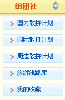

进入 www.tongye114.com 我们提供3种快速查找的功能
第一种方式：散拼中心直接进入

第二种：登陆后，组团社在后台进入，散拼计划中心或线路库，搜索预定

这里要说明的是，散拼计划功能页 包括 国内国际周边有效出团计划的散拼团队计划列表；而旅游线路库内容主要是各专线商地接社的常规有效线路，而在我的收藏 内，您可以自定义只显示某些你喜欢合作的供应商的线路。

| 帮助中心首页 > 使用指南 |
| 如何预订线路 |
|
同业114旅游产品实时丰富！线路产品包含国内长线、国际线和周边短线，目前同业114为B2B网站，预定业务只针对旅行社，普通游客如需预定线路，请查看
商家名录，寻找离你最近的旅行社直接报名即可，记得报名时候说明是在同业114看到的线路。 进入 www.tongye114.com 我们提供3种快速查找的功能 第一种方式：散拼中心直接进入
|
|
第二种：登陆后，组团社在后台进入，散拼计划中心或线路库，搜索预定 这里要说明的是，散拼计划功能页 包括 国内国际周边有效出团计划的散拼团队计划列表；而旅游线路库内容主要是各专线商地接社的常规有效线路，而在我的收藏 内，您可以自定义只显示某些你喜欢合作的供应商的线路。 |
|
第三种：通过MQ在线查找
MQ左侧“线路”栏目： |